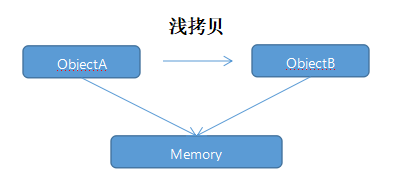
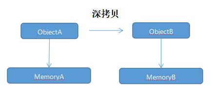

浅拷贝：只复制对象的引用，而不复制对象的结构。此时拷贝对象与被拷贝对象的引用指向同一个对象（也可理解为同一个内存地址），两者之中任一个对象发生变化，另一个对象也会跟着变化。
浅拷贝的用法在System.Collections命名空间中使用的比较多。一方面是因为创建一份大对象的副本对性能有影响；另一方面是因为集合对象类型不一定都是可克隆的，倘若对象中出现循环引用（即类型为T的对象A中存在类型为T的属性/字段）将会导致深拷贝过程出现死循环。
深拷贝：复制对象的结构，使拷贝对象的引用指向复制对象。此时拷贝对象与被拷贝对象的引用指向不同的对象，两者之中任一个发生变化，另一个不受影响。
我们常用的Json序列化与反序列化就是一种深拷贝。
下面用两幅图表示一下深拷贝与浅拷贝的差异：
